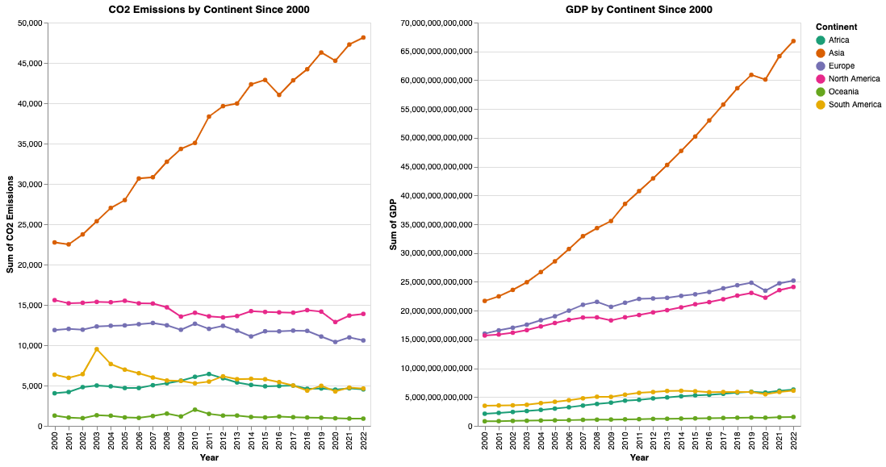

Introduction:
Throughout the past decades, the topic of global climate change and what can be done
about it has become one of the most commonly contested topics in the world. Few indicators
for climate change are more commonly used and studied than the amount of carbon emissions
produced by a given source. Because carbon emissions are such a well correlated indicator
for the rapidly changing global climate, it is extremely important to examine where these
emissions are coming from and what can be done in order to ensure that they are controlled
in the future. Many plans have been put forward for various countries about how to deal with
carbon emissions in order to slow down the effects of climate change, and oftentimes, the
central question for these plans is about what effect they’ll have on the given country’s
economy. For this reason, it is also worth examining how the economies of various countries
have been affected in relation to their emissions status. In order to do this, it would only
make sense to take a closer look at the most prominent indicator of a country’s economy,
which is its GDP. By examining these topics and indicators in relation to each other, the
goal would be to gain a better understanding of global trends in emissions, and to identify
points in which the most optimization is needed.
“Carbon dioxide emissions and economic growth: Panel data evidence from developing countries” (Narayan)
“The relationship between carbon dioxide emission and economic growth: Hierarchical structure methods” (Deviren)
About Our Data:
Our dataset is a simplified version of the ‘Data on CO2 and Greenhouse Gas Emissions’
dataset maintained by Our World in Data (OWID). This larger dataset is updated regularly to
include metrics about global CO2 emissions, and information about it was obtained from GitHub
(link). To produce our final
dataset, we downloaded the OWID dataset, filtered for relevant columns, and removed rows with
years before 1990. This work was done in a Jupyter Notebook file and produced a CSV with attributes
about each country (name, abbreviation, population, GDP) and its CO2 emissions (without land-use
change (LUC) emissions, with LUC, per capita, per GDP, per unit of energy, as well as split by
each industry) from 1990-2022.
Static Visualization 1:

This side by side static visualization shows the trends of both CO2 emissions and GDP in the years
since 2000, divided by continent. Displaying them side by side allows us to see whether or not there
is a pattern shared by these plots, in order to find a connection between these attributes. As we can
see, there is a clear matching trend of increasing CO2 and increasing GDP over these years, with Asia
having the most obvious upward trend. We can also see how, in general, continents with countries of
higher GDPs have higher CO2 emissions.
Static Visualization 2: